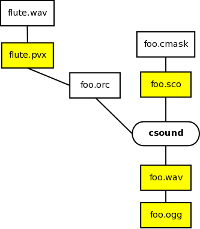
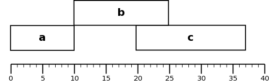

Introduction
Composing with Csound involves rendering Csound orchestra and score files, converting sound files from WAV or AIFF to MP3, generating scores from pre-processors such as SCORE-11 and CMask, generating analysis files with tools like pvanal and hetro, and so on. Doing all these tasks by hand is tedious and error-prone. A build system is a tool designed for this kind of task—it tracks dependencies in a project and performs actions needed to successfully build the final product. For example, figure 1 shows the dependencies of a hypothetical Csound composition. The yellow boxes represent things that are automatically generated from other files.
|

|
The final composition, foo.wav, depends on foo.orc and foo.sco, which is generated from foo.cmask. The file foo.orc uses the pvoc file flute.pvx, which has to be generated from flute.wav. Finally, we want to generate an Ogg Vorbis file to post the composition on the Internet. These are the necessary commands to render this project:
pvanal flute.wav flute.pvx
cmask foo.cmask > foo.sco
csound -o foo.wav foo.orc foo.sco
oggenc -q 8 foo.wav
We don't want to execute these four commands every time we'll render the composition. For example, it is not necessary to run pvanal again if we change only the score. On the other hand, if we change foo.cmask we have to run CMask and Csound again (lines 2-4) but not pvanal (line 1). In this paper we will see how to use a build system to automate tasks like these. We will use GNU Make [5], but there are other build systems such as Scons [3], Rake [7], and Ant [2].
I. Building things with Make
The rules do build a computer program, a LATEX document, or a Csound composition are defined in a file called Makefile. In this file we define rules with the following syntax:
target: dependencies
actions
The indentation before each action has to be done with a tab and not spaces, otherwise Make will complain.
A target usually is a file to build, dependencies are files or other targets that the current target needs, and actions are the commands that have to be issued to build the target. To build a WAV file using Csound we define the following rule:
foo.wav: foo.orc foo.sco
csound -o foo.wav foo.orc foo.sco
The file foo.wav is the target we want to build, foo.orc and foo.sco are the files needed to build foo.wav, and the second line is the action needed to build foo.wav. If one of them is missing, make will try to build them or report an error. A rule to build an Ogg Vorbis file from our generated WAV file is as follows:
foo.ogg: foo.wav
oggenc -q 8 foo.wav
Now let's consider how these two rules would interact with each other. If foo.wav already exists, make will apply the rule foo.ogg directly, without trying to regenerate foo.wav. However, if make detects that foo.orc (a dependency of foo.wav) has changed, it will rebuild foo.wav before building foo.ogg. That's the nice thing about build systems; they build only what is necessary. Having these rules in the Makefile, we can ask make to build a specific rule with commands like “make foo.wav'' and ”make foo.ogg''.
If we want to build different targets of the same type (like three different Ogg Vorbis files from three different WAV files) we use what is called “implicit rules''. It defines a general rule for building a specific kind of target. For example, the implicit rule for generating pvoc files is:
%.pvx: %.wav
pvanal $< $@
This rule depends on a WAV file and runs the pvanal utility to generate a pvoc file with the .pvx extension. The “%'' symbol is used to define a pattern. The pattern %.wav means any file with the extension .wav, for example. The symbol $< matches the name of the dependency and $@ the name of the target.
Implicit rules allow us to define more concise and general rules. The implicit rule to generate a pvoc file will work with any pvoc file with a .pvx extension, while a specific rule will only work for a specific file:
foo.pvx: foo.wav
pvanal foo.wav foo.pvx
Having defined an implicit rule, we need to define only the target and dependencies:
foo.pvx: foo.wav
bar.pvx: bar.wav
flute.pvx: flute.wav
Following is a rule for generating Csound scores from CMask files. Again, $@ is used to match the score file (the target) and $< to match the CMask file (the dependency).
%.sco: %.cmask
cmask $< > $@
We can define a rule to generate Ogg Vorbis files in the same way, except that, since the program oggenc generates Ogg Vorbis files with the same name of the input file automatically, we don't need to use $@.
%.ogg: %.wav
oggenc -q 8 $<
To define a rule to render an .orc and .sco using Csound. We use $@ as before to match the target name (the WAV file on this case) and $< to match the dependencies. The symbol $< actually matches all dependencies; in this case the orchestra and score file names.
%.wav: %.orc %.sco
csound -o $@ $<
II. Working with sections
Csound has support to divide a composition into sections using the s statement in the score. However, it doesn't allow the rendering of a specific section. Csound will render the whole composition even if only one or two sections have changed. This behavior is undesired for a large and complex composition, were the rendering time can be high. We want a way to render only the sections that the composer changed since the last rendering.
Some composers generate sound files using Csound and assemble them in a graphical sound editor or digital audio workstation such as Pro Tools or Ardour. A command line mixer can be used for this same purpose with the advantage that if we change the composition (that is, the Csound files), the final mixdown will be regenerated automatically. In a graphical tool we would have to reassemble manually the music each time a change happens. There are many command line tools to mix sound files together. For simple uses the mixer Csound utility is good enough.
Suppose we have 3 sections, a, b, and c, with duration of 10, 15, and 17 seconds, respectively. Section a starts at time 0, section b at time 10, and section c at 20 seconds, as shown in figure 2.
|

|
The command to mix them with mixer is
mixer -T 0 a.wav -T 10 b.wav -T 20 c.wav -o final.wav
It is not necessary to include the durations of files—only where they begin. The -T flag defines the beginning time and -o the output file. Mixer has more options, like the -F flag to change the volume of a file. The following command will mix the files again, but this time c.wav will be twice as loud.
mixer -T 0 a.wav -T 10 b.wav -F 2 -T 20 c.wav -o final.wav
If a.wav, b.wav, and c.wav are generated by Csound, we can define the following rules to render the sections individually and mix them together:
a.wav: a.orc a.sco
b.wav: b.orc b.sco
c.wav: c.orc c.sco
final.wav: a.wav b.wav c.wav
mixer -T 0 a.wav -T 10 b.wav -F 2 -T 20 c.wav -o final.wav
Make will only generate final.wav if it doesn't exist or a.wav, b.wav, or c.wav haven't changed. As stated before, if all WAV files are created and we change only one file, a.sco for example, only a.wav and final.wav will be generated again.
III. Advanced usage
We can use Csound's environment variables to organize our composition. The following example defines and exports SFDIR, SSDIR, and SADIR:
export SFDIR = /home/kroger/csound/sfdir/
export SSDIR = /home/kroger/csound/ssdir/
export SADIR = /home/kroger/csound/sadir/
We may want to use the vpath feature as well. It defines the default path for specific types of files. Using vpath we don't have to specify where a file has to be read or written. Make will do it automatically:
vpath %.aif $(SSDIR)
vpath %.aiff $(SSDIR)
vpath %.wav $(SSDIR)
vpath %.wav $(SFDIR)
vpath %.pvx $(SADIR)
vpath %.con $(SADIR)
vpath %.het $(SADIR)
vpath %.lpc $(SADIR)
In these two previous examples, SFDIR, SSDIR, and SADIR are defined as variables. Variables can be defined with the form variable = value and called with $(variable).
If we work with sections, we will want to render all score files in a composition. One way to do it is to simply list all resulting WAV files as dependencies:
all: a.wav b.wav c.wav
When we issue “make all'', make will build all dependencies for “all'' automatically (if we have defined an implicit rule for WAV files). We can automatize this one step further by asking make to construct the dependency list for us. The command $(wildcard *.sco) will return a list with all score files in the current directory. In our example it would return a.sco, b.sco, and c.sco. Now we want to substitute the .sco suffix to .wav. This substitution can be accomplished by the subst command. It accepts three arguments; the pattern that will be replaced (.sco in our case), with the new pattern (.wav in our example), and a list of the strings to modify (a list with file names in our case). The complete command is:
wavfiles = $(subst .sco,.wav,$(wildcard *.sco))
Now the variable wavfiles has a list of all WAV files that can be generated form our score files. The definition of the “all'' target them becomes:
all: $(wavfiles)
Cleaning files, that is, removing automatically generated files, is as important as creating them. In the same way we defined a list of WAV files to build, we can use that list to define the files to be removed. If the WAV files are generated in the current directory, cleaning all generated files is as simples as rm $(wavfiles). However, if they are being generated in a specific directory, we have do append the directory do each file in the list. The function addprefix can be used for this task. It accepts two arguments, a prefix to append and a list of strings. The prefix will be appended to each element of the list. The variable fullwavfiles will hold the list of WAV files:
fullwavfiles = $(addprefix $(SFDIR),$(wavfiles))
And the rule clean can be defined as:
clean:
rm -f $(fullwavfiles)
In section 1 we defined the following implicit rule to generate WAV files using Csound:
%.wav: %.orc %.sco
csound -o $@ $<
With it we can define rules such as
foo.wav: foo.orc foo.sco
But often a target will have more dependencies. In the following example flute.pvx is also a dependency of foo.wav and make will make sure it is built before foo.wav:
foo.wav: foo.orc foo.sco flute.pvx
flute.pvx: flute.wav
The problem is that by using $< in the implicit rule, make will match all items in the dependency list. Using the command wordlist we can select only the two first elements of the dependency list (that is, the orchestra and score files):
%.wav: %.orc %.sco
csound -g -o $@ $(wordlist 1, 2, $^)
If we are building many files at once we may want to see only if the file has been built successfully or not, and not see all messages Csound and make produce. That would be the output, which shows the file name and if there were any errors in performance:
foo.wav: 0 errors in performance
bar.wav: 1 errors in performance
bla.wav: 0 errors in performance
The rule to implement it is as follows. The command 2>&1 redirects the standard error (stderr) to the standard output (stdout) [4] and grep "errors in performance" matches any message Csound gives about errors. The character @ in front of commands like csound and echo tells make not to print the command when executing the rule.
%.wav: %.orc %.sco
ifeq ($(verbose),0)
@echo -ne "$@:\t"
@csound -g -o $@ $(wordlist 1, 2, $^) 2>&1 | grep "errors in performance"
else
@csound -g -o $@ $(wordlist 1, 2, $^)
endif
If the variable verbose is different from 0, make will execute Csound as usual, with all error messages. We can change the value of the variable input while executing a make command:
make foo.wav verbose=1
IV. Playing your work
SoX [1] is a command line program that can convert to and from many sound formats, apply effects, and record and play sounds. Often while composing, it is necessary to listen to a passage over and over until we are satisfied with it. We can use a graphical sound player or editor, but it is much more productive to use a command line player to “debug'' a specific passage. The command play foo.wav will play the file foo.wav from beginning to end. The option trim can be used to play only a passage. For example, the following command
play foo.wav trim 1:00 30
will start playing not from the beginning of the file, but after 1 second. The option 30 means that the file will be played for 30 seconds. Maybe we want to listen only to a channel from a passage, to isolate some problem. The following command
play foo.wav -c 1 mixer -l
will play only the left channel, for example. The option -r would play only the right channel. Sometimes we want to listen to a passage more than one time. The option repeat can be used. For instance, the following command will play the right channel of foo.wav for 15 seconds, starting two seconds from the beginning, and repeating it 3 times:
play foo.wav -c 1 mixer -r trim 2:00 15 repeat 3
Finally, SoX can be useful to make quick conversions. For example, we may want to quickly generate a stereo version of a quadraphonic composition:
sox quad.wav -c 2 stereo.wav mixer 1,1
We can define rules in the Makefile to play or convert files automatically. See section 5 for examples.
V. A complete Makefile
In this section we have a complete Makefile you can use. We can save it in a file like csound.mk and import it with the command include.
export SFDIR = /home/kroger/csound/sfdir/
export SSDIR = /home/kroger/csound/ssdir/
export SADIR = /home/kroger/csound/sadir/
vpath %.aif $(SSDIR)
vpath %.aiff $(SSDIR)
vpath %.wav $(SSDIR)
vpath %.wav $(SFDIR)
vpath %.pvx $(SADIR)
vpath %.con $(SADIR)
vpath %.het $(SADIR)
vpath %.lpc $(SADIR)
OUTPUT = 2> /dev/null
wavfiles = $(subst .sco,.wav,$(wildcard *.sco))
fullwavfiles = $(addprefix $(SFDIR),$(wavfiles))
all: $(wavfiles)
%.ogg: %.wav
oggenc -q 8 $<
%.flac: %.wav
flac $<
%.wav: %.orc %.sco
ifeq ($(debug),0)
@echo -ne "$@:\t"
@csound -g -o $@ $(wordlist 1, 2, $^) 2>&1 | grep "errors in performance"
else
@csound -g -o $@ $(wordlist 1, 2, $^)
endif
%.pvx: %.aif
@pvanal -n 1024 -w 8 $< $(SADIR)/$@ $(OUTPUT)
%.pvx: %.wav
@pvanal -n 1024 -w 8 $< $(SADIR)/$@ $(OUTPUT)
%.con: %.wav
@cvanal $< $(SADIR)/$@ $(OUTPUT)
%.sco: %.cmask
cmaskLINUXi386 $<
%.con: %.wav
@cvanal $< $(SADIR)/$@ $(OUTPUT)
play:
play $(SFDIR)/$(file)
cleanall: clean cleananal
clean:
@rm -f $(fullwavfiles)
cleananal:
@rm -f $(SADIR)/*.*
VI. Conclusion
This paper presented a way to make the generation of Csound compositions automatic with GNU Make. By using command line tools, many Csound-related tasks can be automated with make. Make has many other options and features that can be found in the excellent manual [5]. Ecasound [6] is a very powerful and flexible command line multitrack audio processing tool. It can be used in place of Csound mixer for more sophisticated uses.
References
[1] SoX Home Page. http://sox.sourceforge.net/.[2] Stephane Bailliez, NicolaKen Barozzi, Jacques Bergeron, and Stefan Bodewig. Apache Ant 1.7.0 Manual. http://ant.apache.org/manual/index.html.
[3] Steven Knight. SCons User Guide 0.97, 2007. http://www.scons.org/doc/0.97/HTML/scons-user/book1.html.
[4] MikeG. mikkey. BASH Programming - Introduction HOWTO, 2000. http://tldp.org/HOWTO/Bash-Prog-Intro-HOWTO.html.
[5] RichardM. Stallman, Roland McGrath, and Paul D. Smith. GNU Make Manual, 2007. http://www.gnu.org/software/make/manual/.
[6] Kai Vehmanen. Ecasound User’s Guide, 2006. http://www.eca.cx/ecasound/.
[7] Jim Weirich. Rake User Guide, 2005. http://rake.rubyforge.org/.